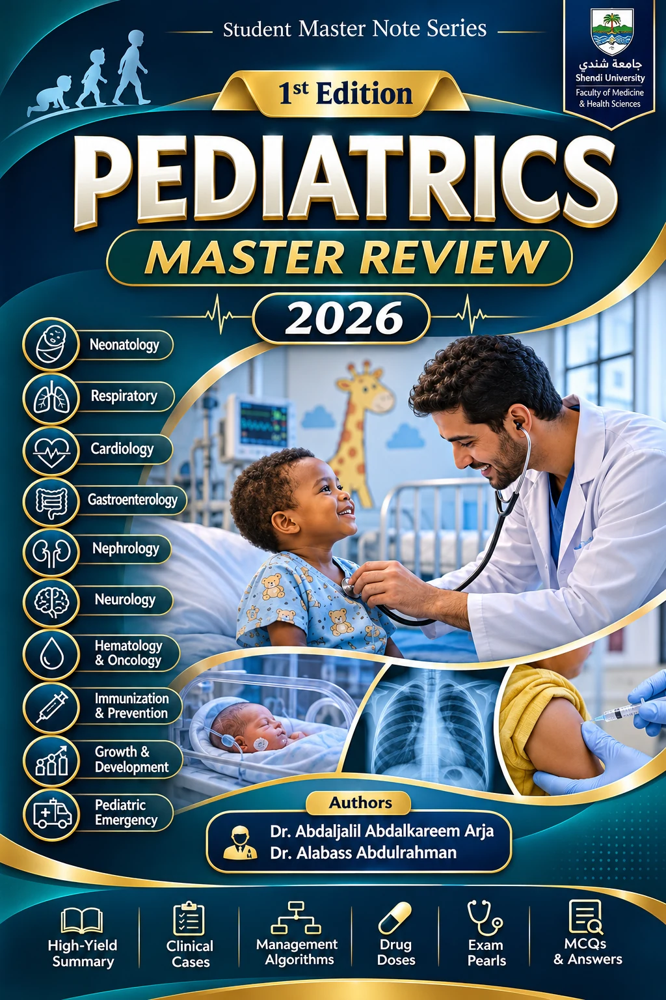

First edition. Each topic in a few pages: why it happens, what to look for, the doses we use in our hospitals, and the clue that flips the answer.
Your progress
The book
Tap a part to open
Study tools
1 / 1
0:000:00
Contents

About the Authorsعن المؤلفين
Student Master Note series
Dr. Abdaljalil Abdalkareem ArjaDr. Alabass AbdulrahmanShendi University · Faculty of Medicine
نحنا منو
نحنا خرّيجين كلية الطب، جامعة شندي (Shendi University)، ومؤسّسين سلسلة Student Master Note. قعدنا سنين في قاعات الدراسة وسهر الليالي قبل الامتحانات، وشفنا بعيوننا الطالب بيضيّع وقته كيف بين المراجع الكبيرة والملخّصات المشتّتة. عشان كدا قرّرنا نعمل المرجع الكان نفسنا يكون معانا ونحنا طلاب.
عن الكتاب
Pediatrics Master Review هو كتاب الأطفال في السلسلة، بعد Obstetrics Master Review وSurgery Master Review. كل موضوع في صفحات قليلة: ليه بيحصل، تلقى شنو في الكشف، والجرعات بالـkg الشغّالة في مستشفياتنا. مشينا فيه على البروتوكولات السودانية وبرامج IMCI وETAT وعلاج سوء التغذية، وراجعناه على المراجع العالمية وآخر توصيات WHO. ومعاه flashcards، وبنك أسئلة (QBank)، ومحطّات OSCE، ودليل لأدوية الأطفال وجرعاتها.
أهدافنا
الطالب يفهم المرض قبل ما يحفظه: ليه بيحصل، بيظهر كيف، ونعمل شنو.
نربط المراجع العالمية بالواقع البنشوفه في عنابر الأطفال في السودان.
نوفّر وقت الطالب ونركّز على البيجي في الـMCQs والحالات والـOSCE.
الجرعة تكون صاح ومحسوبة بالوزن، والمعلومة محدّثة على حسب آخر الـguidelines.
نيّتنا
نتمنّى الشغل دا يكون خالص لوجه الله، وعلم يُنتفع به، وصدقة جارية لينا ولأهلنا ولأساتذتنا.
لو لقيت فيه فايدة ما تنسانا من دعوة صالحة، ولو لقيت غلطة كلّمنا عشان نصلّحها في الطبعة الجاية.
خطّتنا الجاية
نكبّر الـQBank بأسئلة وحالات جديدة.
نضيف شرح صوتي لكل صفحة في الكتاب.
كتب تانية في سلسلة Student Master Note بنفس الطريقة.
نحدّث الكتاب طوالي بملاحظاتكم، إنتو الطلاب والأساتذة.
كلمة في حقّ المؤلّفين
الزول البيتابع الشغل في الكتاب دا من جوّا بيشوف دكاترة شباب ما بيرضوا بالساهل: بيراجعوا كل سطر، وبيسألوا عن كل معلومة: صاح ولا لا؟ بتجي في الامتحان؟ ودا فعلاً البنعمله في عنابر الأطفال عندنا؟ رتّبوا الصفحات وصمّموها مرّة ورا مرّة لحدّي ما بقت زي ما دايرينها لزملائهم. الكتاب دا ثمرة إيمانهم إنه العلم بيتشارك، وإنه طالب الطب في السودان يستاهل أحسن الأدوات.
About this editionPediatrics Master Review · 1st edition · 2026
This edition
The first edition covers undergraduate pediatrics in 15 chapters and five parts: General Pediatrics, Infectious Diseases, Systems, Emergencies, and Clinical & Drugs.
With the book: flashcards for every topic, a question bank of single-best-answer MCQs with explanations, an Exam corner at the end of each chapter, an OSCE chapter, a drugs and doses chapter and a Rapid review at the end of the book.
Content follows local practice in Sudanese hospitals and the national protocols (IMCI, ETAT, management of severe acute malnutrition), checked against standard pediatric textbooks and current WHO guidance. Where they differ, the local way is given and the guideline is noted.
Disclaimer
This book is a revision aid for medical students. It does not replace textbooks, clinical teaching or the judgement of your senior doctors.
Medicine changes. The authors have made every effort to keep the content accurate and up to date, but errors are possible. Check every drug dose against the child's weight, current guidelines, the national formulary and your hospital's protocols before giving it.
The authors accept no responsibility for any harm or loss arising from the use of this material.
No part of this book, its flashcards or its questions may be copied, printed, photographed, shared in groups, converted to PDF, resold or distributed in any form without the written permission of the authors.
A subscription is personal: one student, on up to two devices.
Thanks
All praise and thanks are to Allah, who made this work possible.
We thank our parents for their endless support; our teachers at the Faculty of Medicine, Shendi University, who taught us pediatrics on the wards and in the lecture halls; and the colleagues whose notes, summaries and sheets have helped generations of students.
Thank you to every student who reads this book. Your questions and corrections make the next edition better: send them to us on WhatsApp 0116984258.
Chapter 1 · Growth, Development & ImmunizationGrowth Parameters6
1.1Normal Growth & Growth Charts
Growth is the increase in the size and number of cells, measured as weight, length (height) and head circumference. Development is the gain of skills and maturation of function (1.2). Both go in parallel. Growth is the most sensitive single sign of a child's health: a child who is ill, underfed or neglected stops growing before any other sign appears.
1. Periods of childhood
Neonate
Birth to 28 days
Infant
Birth to 1 year · the period of most rapid growth and brain development
Toddler / preschool
1–5 years · growth slows down
School age
6–12 years · slow, steady growth
Adolescence
About 10–19 years · pubertal growth spurt, then fusion of the epiphyses ends growth
2. Factors affecting growth
Genetic: parents' heights (mid-parental height), race, sex
Hormonal:GH (childhood), thyroxine (infancy and brain), sex hormones (puberty), insulin (fetal)
Chapter 1 · Growth, Development & ImmunizationGrowth Charts8
1.1Normal Growth & Growth Charts
A growth chart plots a child's measurement against age, compared with a reference population. In Sudan the WHO Child Growth Standards are used (separate charts for boys and girls, on the Road-to-Health card). One measurement shows size; repeated measurements show growth (velocity), which is more important.
9. Reading a centile chart
Normal
Between the 3rd and 97th centiles (WHO: −2 to +2 SD) and follows its own centile line
Faltering
A fall across two major centile lines, or a flat curve, even if still "within normal"
Small but normal
Below the 3rd centile but parallel to it, small parents, normal velocity: familial short stature
Catch-up
Preterm babies: plot by corrected age until 2 years
10. WHO anthropometric indices
Index
What it shows
Abnormal
Weight-for-height (WHZ)
Acute malnutrition (wasting)
< −2 SD moderate · < −3 SD severe
Height-for-age (HAZ)
Chronic malnutrition (stunting)
< −2 SD stunted · < −3 SD severe
Weight-for-age (WAZ)
Underweight (acute + chronic mixed)
< −2 SD underweight
BMI-for-age
Over-nutrition (≥ 2 yr)
> +2 SD overweight · > +3 SD obese
Exam trap
A single reading below the 3rd centile is not enough to call growth abnormal; a child whose weight and height are both on the 10th centile is normal. What matters is the trend: a child crossing centile lines downwards is abnormal even above the 3rd centile.
Chapter 1 · Growth, Development & ImmunizationPrinciples & Primitive Reflexes10
1.2Developmental Milestones
Development is the acquisition of skills in four fields: gross motor, fine motor and vision, speech, language and hearing, and social, emotional and behaviour. The order is constant in all children; only the rate varies. Assess each field separately, give it an age, then compare with the child's age.
1. Principles of development
Proceeds cephalo-caudal (head control before sitting, sitting before walking) and proximal to distal (whole-hand grasp before pincer grasp)
Primitive reflexes must disappear before voluntary movement appears
Median age = age at which 50% achieve a skill · limit age = age by which 97.5% achieve it (+2 SD): failure to reach the limit age needs assessment
Preterm babies: use the corrected age (subtract the weeks born early) until 2 years: a 9-month-old born at 28 weeks is expected to behave like a 6-month-old
Gross motor skills expand most in year 1, speech from 18 months, social skills from 2½ years
2. Primitive reflexes
Reflex
How it is elicited · response
Disappears
Moro
Sudden head drop backwards → arms abduct and extend, then come together, cry
4–6 months
Rooting / sucking
Touch the cheek → head turns to the stimulus, sucks
4 months
Palmar grasp
Finger in the palm → fingers flex and hold
3–4 months
Plantar grasp
Pressure on the sole → toes flex
9–12 months
ATNR
Head turned to one side → "fencing" posture (arm extends on that side)
6 months
Stepping / placing
Held upright, feet touch a surface → steps
2 months
3. Postural (protective) reflexes
Appear as primitive reflexes go, and stay for life
Parachute reflex: 6–9 months (mature by 9 months): arms extend when the baby is tipped forward
Lateral propping: 6–7 months
Persisting primitive reflexes (Moro or ATNR after 6 months) = cerebral palsy (10.3)
Chapter 1 · Growth, Development & ImmunizationMilestones by Age11
1.2Developmental Milestones
5. Developmental milestones (median ages)
Age
Gross motor
Fine motor & vision
Speech & hearing
Social
Newborn
Flexed posture · complete head lag
Fixes on a face close by
Startles to sound · cries
—
6 weeks
Prone: lifts head briefly
Follows to midline
Quietens to voice
Social smile
3 months
Head control · prone: on forearms
Follows 180° · hands open, holds a rattle placed in hand
Cooing · turns to sound
Laughs · recognises mother
6 months
Sits with support (tripod) · rolls over · no head lag
Reaches · palmar grasp · transfers hand to hand · mouths objects
Babbles (ba, da) · turns to voice
Smiles at mirror · stranger anxiety begins
9 months
Sits without support · crawls · pulls to stand
Immature pincer · pokes with index finger · looks for a fallen toy
"Mama, dada" (non-specific) · understands "no"
Waves bye-bye · plays peek-a-boo · stranger anxiety
12 months
Walks with one hand held · cruises · stands alone
Mature pincer grasp · casts objects · bangs two cubes
2–3 words with meaning · follows simple command
Drinks from a cup · finger feeds
15 months
Walks alone (wide-based)
Tower of 2 cubes · scribbles
Several words
Points to wants
18 months
Runs (stiffly) · climbs stairs holding on · squats to pick up
Tower of 3–4 cubes · to-and-fro scribble · turns pages
10–20 words · points to 2–3 body parts
Uses a spoon · removes shoes · symbolic play
2 years
Runs · kicks a ball · up and down stairs, 2 feet per step
Tower of 6–7 · copies a vertical line
2–3-word sentences · ≥ 50 words
Parallel play · helps undress · dry by day (begins)
3 years
Rides a tricycle · up stairs one foot per step · stands on one foot briefly
Tower of 9 · copies a circle · copies a bridge
Full name, age, sex · counts to 3 · 3–4-word sentences
Plays with others · dry by night · eats with a spoon well
4 years
Hops on one foot · down stairs one foot per step
Copies a cross (+) · draws a man (3 parts)
Tells a story · counts to 10 · asks "why"
Dresses with help · imaginative play
5 years
Skips · catches a ball
Copies a square (4 yr) and triangle (5 yr)
Fluent speech · knows colours
Dresses alone (buttons) · plays by rules
Order of copying shapes
Line (2 yr) → circle (3 yr) → cross (4 yr) → square (4½ yr) → triangle (5 yr) → diamond (6 yr). Cubes: tower of age in years × 3 (2 years = 6 cubes, 3 years = 9).
Chapter 1 · Growth, Development & ImmunizationDevelopmental Delay12
1.2Developmental Milestones
6. Red flags (limit ages)
No social smile
By 8 weeks
No head control
By 4 months
Not sitting unsupported
By 9 months
Not walking
By 18 months (bottom-shufflers may be later)
No words
By 18 months · no 2-word phrases by 2½ years
Hand preference
Before 12 months (weakness of the other hand)
Loss of skills
At any age: regression = neurodegenerative disease or autism
7. Types of delay
Global delay: two or more fields delayed · causes: genetic (Down syndrome, fragile X), birth asphyxia, kernicterus, congenital infection, congenital hypothyroidism, meningitis, severe malnutrition
Specific delay: one field only · motor: CP, muscle disease · speech: deafness · social: autism
Deafness (commonest treatable) · global delay · autism · lack of stimulation · bilingual home · cleft palate, tongue-tie (articulation)
Smiling / social
Blindness · lack of stimulation · intellectual disability · autism
9. Autism spectrum disorder
Impaired social interaction (poor eye contact, no pointing to share interest, no response to name) + impaired communication + restricted, repetitive behaviour (hand flapping, lining up toys, insists on sameness)
Boys more than girls · onset before 3 years · regression of language at 15–24 months in some
Management: early referral, speech and behavioural therapy, special education; vaccines do not cause autism
Chapter 1 · Growth, Development & ImmunizationFailure to Thrive14
1.3Failure to Thrive & Short Stature
Failure to thrive (FTT) is inadequate physical growth in a young child: weight below the 3rd centile, or weight that crosses two major centile lines downwards. It is a sign, not a diagnosis. In Sudan the commonest cause is inadequate intake (poor feeding practice, poverty) often with recurrent infection (diarrhoea, TB, malaria).
First line: CBC, urinalysis and urine culture (silent UTI), stool exam (giardia, ova, fat), RFT and electrolytes, LFT, blood glucose
Second line: TSH, coeliac serology (anti-tTG IgA), HIV test, Mantoux and CXR, sweat test, karyotype (girls: Turner), echocardiogram
The best diagnostic step in most cases is admission and a trial of adequate feeding: weight gain in hospital confirms inadequate intake at home
4. Management
Treat the cause · nutritional rehabilitation (about 150 kcal/kg/day or more for catch-up)
Feeding education for the mother: correct formula preparation, energy-dense weaning food (2.1)
Social support; suspected neglect → social worker
Follow up weight monthly on the growth chart
Short stature is height below the 3rd centile (−2 SD) for age and sex. Most short children are normal: familial short stature and constitutional delay. The height velocity separates normal from pathological: a normal-variant child grows at a normal speed.
Karyotype in every short girl without an obvious cause (Turner)
GH stimulation test (after normal screening) · MRI pituitary if GH low or headache, visual field defect (craniopharyngioma)
Exam trap
In malnutrition, weight falls before height (the child is thin); in endocrine short stature, height falls first and the child is plump. Tall stature in childhood: familial, obesity, Marfan, Klinefelter, precocious puberty (tall child, short adult).
Chapter 1 · Growth, Development & ImmunizationPrinciples & the Sudan EPI Schedule16
1.4Immunization
Immunization gives protection against a disease by stimulating the immune system (active) or by giving ready-made antibody (passive). The Expanded Programme on Immunization (EPI) of the Sudan Federal Ministry of Health gives the routine vaccines free of charge; its goals include eradication of polio and elimination of measles and neonatal tetanus.
1. Types of immunity
Natural
Acquired (artificial)
Active
After infection (often lifelong)
Vaccines · takes weeks · long-lasting, memory
Passive
Maternal IgG across the placenta, IgA in breast milk · lasts ≈ 6 months
BCG, OPV, measles / MR / MMR, rotavirus, yellow fever, varicella · strongest immunity, often one dose · avoid in immunosuppression and pregnancy
Inactivated (killed)
Whole-cell pertussis, IPV (Salk), hepatitis A, rabies, influenza
Toxoid
Diphtheria, tetanus (inactivated toxin)
Recombinant / subunit
Hepatitis B (HBsAg), HPV
Polysaccharide
PPV23, typhoid Vi · B-cell only: poor response under 2 years, no booster effect
Conjugate
Hib, PCV13, MenA · sugar joined to a protein → T-cell response, works in infants, gives memory
3. Sudan EPI schedule
Age
Vaccines
Birth
BCG + OPV 0 (zero dose, within 2 weeks)
6 weeks
OPV 1 + Penta 1 + PCV 1 + Rota 1
10 weeks
OPV 2 + Penta 2 + PCV 2 + Rota 2
14 weeks
OPV 3 + Penta 3 + PCV 3 + IPV
9 months
Measles 1 (MR) · MenA conjugate · yellow fever in high-risk states
18 months
Measles 2 (MR)
Women 15–49 yr
Tetanus toxoid (Td) 5 doses, to prevent neonatal tetanus
Pentavalent = DTwP (diphtheria, tetanus, whole-cell pertussis) + hepatitis B + Hib. Minimum interval between doses of the same vaccine: 4 weeks. A missed dose is given at the next visit: never restart the schedule.
4. Route, dose and site
Vaccine
Dose · route · site
Notes
BCG
0.05 mL (neonate) · intradermal · left upper arm (deltoid insertion)
Papule at 2–6 weeks → ulcer → scar by 3 months · protects against TB meningitis and miliary TB, not lung TB
OPV (Sabin)
2 drops oral
Gut (IgA) immunity, stops spread · rare vaccine-associated paralysis (VAPP)
IPV (Salk)
0.5 mL IM · thigh
No VAPP · given with OPV for eradication
Pentavalent
0.5 mL IM · left anterolateral thigh
Most reactogenic (pertussis): fever, local pain
PCV13
0.5 mL IM · right anterolateral thigh
Prevents pneumonia, meningitis, otitis
Rotavirus
Oral (1–2 mL by brand)
Live · first dose by 15 weeks, last by 8 months · rare intussusception
Measles / MR
0.5 mL SC · right upper arm
Live · given at 9 months because maternal antibody blocks it earlier · from 6 months in an outbreak
Breast milk is the ideal food for the infant. WHO and the Sudan Ministry of Health recommend early initiation within 1 hour of birth, exclusive breastfeeding for 6 months, then safe complementary foods with continued breastfeeding to 2 years or beyond.
1. Composition of breast milk
Breast milk
Cow's milk
Energy
≈ 67–70 kcal/100 mL
Same
Protein
Low (1.1 g/dL), mainly whey (easy to digest), lactalbumin
3× higher, mainly casein (curds), high renal solute load
Carbohydrate
Lactose high (7 g/dL) → soft acidic stool, growth of lactobacilli
Lower (4.5 g/dL)
Fat
Essential fatty acids, DHA, lipase · more in hind-milk
Saturated fat
Minerals
Low iron but 50% absorbed (lactoferrin) · Ca : PO₄ = 2 : 1
Colostrum (first 3–5 days): yellow, thick, small volume · rich in IgA, protein, vitamin A, low fat · "the first vaccine"
Fore-milk (start of feed): watery, rich in lactose, quenches thirst · Hind-milk (end of feed): rich in fat, satisfies hunger: empty one breast before the other
2. Advantages
For the baby
↓ diarrhoea, pneumonia, otitis, NEC, sepsis
Ideal nutrition, easily digested, clean, at the right temperature
Better IQ · ↓ later obesity, diabetes, allergy
For the mother and family
Bonding · uterine involution (oxytocin) · less PPH
Contraception (lactational amenorrhoea, if exclusive and under 6 months)
↓ breast and ovarian cancer · free, always available
3. Good attachment and adequate milk
Signs of good attachment
Chin touching the breast · mouth wide open
Lower lip turned out · more areola above than below
Slow, deep sucks with pauses; no pain
Baby is getting enough
≥ 6 wet nappies a day after day 5
Good weight gain (back to birth weight by 2 weeks)
Settled after feeds · feeds 8–12 times a day on demand
4. Contraindications
Baby
Galactosaemia (absolute) · phenylketonuria (partial breastfeeding with special formula)
Mother
Active untreated TB (first 2 weeks of treatment: express milk) · anticancer drugs, radioactive iodine, lithium · breast herpes lesion (that breast) · HIV: in Sudan, breastfeed on ART (exclusive 6 months), as replacement feeding is unsafe
Not contraindications
Hepatitis B (baby gets vaccine + HBIG), mastitis (continue), most antibiotics, maternal fever, jaundice in the baby
Start at 6 months: breast milk alone no longer meets the need for energy, iron and zinc
Too early (< 4 months): diarrhoea, allergy, less breast milk · too late: malnutrition, iron deficiency, feeding difficulty
Start with soft, thick porridge (asida, rice, potato), then mashed family food; add animal-source food (egg, liver, meat, fish), legumes (ful, lentils), oil, fruit and vegetables
Responsive feeding with a cup and spoon (no bottle) · good hygiene · iodised salt
During and after illness: more frequent feeds and continue breastfeeding
Age
Texture
Meals a day (plus breastfeeding)
6–8 months
Thick porridge, well-mashed foods
2–3 meals + 1–2 snacks
9–11 months
Finely chopped, finger foods
3–4 meals + 1–2 snacks
12–24 months
Family foods
3–4 meals + 1–2 snacks
Avoid before 1 year: whole cow's milk as the main drink (iron deficiency, occult GI bleeding), honey (botulism), whole nuts (choking), tea with meals (blocks iron).
6. Nutritional requirements
Age
Energy
Fluid (milk)
Protein
0–6 months
100–110 kcal/kg/day
150 mL/kg/day
2 g/kg/day
6–12 months
≈ 100 kcal/kg/day
≈ 120 mL/kg/day
1.5 g/kg/day
1–3 years
≈ 1000 kcal/day
≈ 100 mL/kg/day
1.1 g/kg/day
7. Formula feeding
Indications: no breast milk (maternal death or absence), galactosaemia (special formula), mother on contraindicated drugs
Infant formula is modified cow's milk: protein and solutes reduced, iron and vitamins added
Preterm formula: more energy, protein, Ca and PO₄
Prepare with boiled, cooled water and the exact number of scoops; clean the cup or bottle each feed
Severe acute malnutrition (SAM) is a major cause of death in Sudanese children under 5. It is managed by the CMAM programme (community-based management of acute malnutrition): uncomplicated cases at home with RUTF, complicated cases in a stabilisation centre with F-75 and F-100, following the WHO 10 steps.
1. Definition of SAM (6–59 months)
Any one of:
Weight-for-height < −3 SD (WHZ)
MUAC < 11.5 cm
Bilateral pitting oedema (nutritional)
Moderate acute malnutrition (MAM):
WHZ −3 to −2 SD, or
MUAC 11.5–12.5 cm
Treated by the supplementary feeding programme
2. Marasmus and kwashiorkor
Feature
Marasmus
Kwashiorkor
Cause
Deficiency of energy (all food)
Relative protein deficiency + infection + oxidative stress
Age
Infancy (first year): failed breastfeeding
1–3 years, after weaning ("the disease of the displaced child")
Oedema
Absent
Present (must be present for the diagnosis)
Wasting
Severe: "skin and bones", old-man face, loss of buccal fat last, baggy pants
Masked by oedema; muscle wasting, fat relatively preserved
Sparse, thin, depigmented (reddish), easily pluckable · flag sign
Liver
Normal
Enlarged, fatty
Albumin
Normal or slightly low
Low
Prognosis
Better
Worse
Marasmic–kwashiorkor: severe wasting + oedema (worst prognosis). Grading of oedema: + feet only · ++ feet and legs (and hands) · +++ generalised including face.
3. Pathophysiology of the dangers
The body slows every system to survive ("reductive adaptation"): the cells pump out less sodium (↑ total body Na, ↓ K, ↓ Mg), the heart is small and weak, and infection gives no fever. Too much fluid, sodium or protein too fast causes heart failure and death.
SAM with medical complications (danger signs, pneumonia, dehydration, fever, hypothermia, severe anaemia, skin lesions), oedema +++, failed appetite test, or age < 6 months
Outpatient (OTP)
SAM, alert, passes the appetite test, oedema + or ++, no complications → RUTF at home, weekly visit
Appetite test
Give RUTF in a quiet place for up to 30 min: child eats at least the target amount (about ⅓ of a packet for a 4–7 kg child) = pass
5. The 10 steps of inpatient care
6. Steps 1 and 2: hypoglycaemia and hypothermia
Hypoglycaemia (glucose < 3 mmol/L, 54 mg/dL)
Alert: 50 mL of 10% glucose orally or by NG tube, then F-75
Unconscious: 10% dextrose 5 mL/kg IV, then 50 mL by NG tube
Feed 2-hourly day and night + start antibiotics
Hypothermia (axillary < 35 °C, rectal < 35.5 °C)
Feed at once · kangaroo skin-to-skin with the mother, cover head, warm room
No hot-water bottles (burns)
Hypothermia and hypoglycaemia are signs of infection: give antibiotics
7. Step 3: dehydration
Signs of dehydration are unreliable in SAM (sunken eyes, poor skin turgor are present anyway): rely on the history of watery diarrhoea, thirst, recent sunken eyes, weak pulse, no urine
Use ReSoMal (less Na, more K than standard ORS): 5 mL/kg every 30 min for 2 h, then 5–10 mL/kg/h for up to 10 h, alternating with F-75 · after each loose stool: 50–100 mL
No IV fluids except in shock: 15 mL/kg over 1 h of half-strength Darrow's or Ringer's lactate with 5% dextrose; repeat once if improving, else blood 10 mL/kg over 3 h
Stop fluids if pulse ↑ by 15–25, RR ↑ by 5, liver enlarges, puffy eyelids: heart failure
8. Steps 4 and 5: electrolytes and infection
Give extra potassium and magnesium (electrolyte-mineral solution, already in F-75, F-100 and ReSoMal)
Never treat oedema with diuretics · low-sodium foods
Antibiotics for every child: uncomplicated: amoxicillin 25 mg/kg 12-hourly × 5 days
Complicated: ampicillin 50 mg/kg IV 6-hourly + gentamicin 7.5 mg/kg daily × 7 days
Vitamin A on day 1 only if eye signs or recent measles (F-75/F-100/RUTF contain it): < 6 months 50 000 IU · 6–12 months 100 000 IU · > 12 months 200 000 IU
Folic acid 5 mg day 1, then 1 mg/day · zinc and copper are in the feeds
Iron: never in the stabilisation phase (feeds bacteria, free radicals); start in rehabilitation when the child gains weight (3 mg/kg/day)
10. Step 7: cautious feeding with F-75
Days
Frequency
Volume per feed
Volume per day
1–2
2-hourly (12 feeds)
11 mL/kg
130 mL/kg
3–5
3-hourly (8 feeds)
16 mL/kg
130 mL/kg
6–7+
4-hourly (6 feeds)
22 mL/kg
130 mL/kg
F-75: 75 kcal and 0.9 g protein per 100 mL (low protein, low sodium). Severe oedema: 100 mL/kg/day. Feed by cup and spoon; NG tube if the child takes < 80% of the feed. Continue breastfeeding.
11. Step 8: catch-up growth (rehabilitation)
Ready when: appetite returns, oedema reduced (usually day 3–7)
Transition: replace F-75 by the same volume of F-100 (100 kcal, 2.9 g protein/100 mL) or RUTF for 2 days, then increase by 10 mL each feed
Then 150–220 kcal/kg/day
RUTF (Plumpy'Nut): peanut paste, 500 kcal per 92 g sachet, needs no water (no contamination) · ≈ 200 kcal/kg/day
Watch for heart failure during transition: pulse ↑ 25 or RR ↑ 5 → reduce the feed
Target gain > 10 g/kg/day · < 5 g/kg/day = look for infection (TB, HIV, UTI)
12. Steps 9 and 10: stimulation and follow-up
Play, mother involvement, cheerful environment: malnourished children have delayed development
Discharge to OTP when appetite is good, complications resolved, oedema settling · cure when WHZ ≥ −2 SD or MUAC ≥ 12.5 cm and no oedema for 2 weeks
Teach the mother to prepare energy-dense food · complete immunization · deworm (albendazole 400 mg once, ≥ 2 yr; 200 mg at 1–2 yr) in rehabilitation
13. Refeeding syndrome and other complications
Refeeding syndrome
Too much food too fast → ↓ PO₄, ↓ K, ↓ Mg as cells take them up → heart failure, arrhythmia, weakness: start slowly with F-75
Heart failure
Fluid or blood overload, transition too fast · stop feeds and fluids · furosemide 1 mg/kg IV only for heart failure
Severe anaemia
Hb < 4 g/dL (or < 6 with distress) → packed cells 10 mL/kg over 3 h in the first 24 h; avoid from day 2 to 14
Corneal ulcer
Vitamin A + chloramphenicol / tetracycline eye drops + atropine, eye pad
Chapter 2 · NutritionVitamin D Metabolism & Clinical Features27
2.3Rickets
Rickets is defective mineralisation of the growing bone (at the growth plate) before the epiphyses fuse; osteomalacia is the same defect in adult bone. The commonest form is nutritional rickets from vitamin D deficiency, seen in Sudan in exclusively breastfed infants kept indoors and covered, and in dark-skinned mothers with low vitamin D.
Healing: a dense white line of new calcification at the metaphysis within 2–4 weeks
Exam trap
ALP is the best screening and follow-up test, but it may be normal in malnutrition (zinc-dependent enzyme) and physiologically high in growing children. Hypophosphataemic rickets has a normal calcium and normal PTH and does not respond to ordinary vitamin D.
5. Treatment of nutritional rickets
Vitamin D (cholecalciferol), either daily: 2000 IU/day for 3 months (< 1 yr) · 3000–6000 IU/day for 3 months (1–12 yr), or stoss therapy (single large dose, when adherence is doubtful): 50 000 IU (1–3 months) · 150 000 IU (3–12 months) · 300 000 IU (1–12 yr) orally or IM
Calcium for every child: 500 mg/day elemental calcium (diet or tablets), especially the first weeks, to prevent hungry bone hypocalcaemia
Hypocalcaemic convulsions or tetany:10% calcium gluconate 0.5 mL/kg (max 20 mL) IV slowly over 10 min with ECG monitoring, then oral calcium
Then a maintenance dose400 IU/day · sunlight, diet (eggs, fish, fortified milk)
Follow up: ALP and X-ray after 3 months · bowing usually corrects by itself; osteotomy only for severe deformity persisting after age 4
6. Other types
Hypophosphataemic: oral phosphate 4–5 times a day + calcitriol
VDDR type 1:calcitriol (1,25-(OH)₂ D) lifelong
CKD: phosphate binders, calcitriol
Prevention:vitamin D 400 IU/day to all breastfed infants from birth to 1 year; sun exposure
Micronutrient deficiencies ("hidden hunger") are common in Sudanese children, especially with malnutrition, measles and chronic diarrhoea. The most important in public health are vitamin A, zinc, iodine and iron (iron: 8.1).
1. Vitamin A deficiency
Role: vision in dim light (rhodopsin), epithelial integrity, immunity
Risk: SAM, measles, chronic diarrhoea, poor diet · deficiency makes measles more severe and deadly
Day 1, day 2 and day 14 (3 doses): xerophthalmia · measles (days 1 and 2)
Every 6 months from 6 months to 5 years
6–12 months
100 000 IU (blue capsule)
> 12 months
200 000 IU (red capsule)
Excess vitamin A: raised ICP (bulging fontanelle, vomiting), liver damage, bone pain; teratogenic in pregnancy.
2. Zinc deficiency
Role: enzymes, growth, immunity, gut repair
Features: growth failure, diarrhoea, ↑ infections, perioral and perianal dermatitis, alopecia, poor wound healing, loss of taste
Acrodermatitis enteropathica: inherited zinc malabsorption: rash around the mouth, anus and limbs + diarrhoea + alopecia, starting at weaning
Zinc in diarrhoea (IMCI)
Every child with diarrhoea: zinc 10 mg/day (< 6 months) or 20 mg/day (≥ 6 months) for 10–14 days. It shortens the episode and prevents new ones for 2–3 months.
3. Iodine deficiency
Endemic in parts of Sudan (Darfur, Kordofan) · prevented by iodised salt
Goitre in children and mothers · reduced IQ, school failure
Severe deficiency in pregnancy → endemic cretinism: intellectual disability, deaf-mutism, spastic diplegia, short stature, squint
The commonest preventable cause of intellectual disability worldwide
Breastfed infant of a vegan mother: anaemia, regression, hypotonia · subacute combined degeneration (older)
C ascorbic acid
Scurvy
Infant 6–24 months on boiled or processed milk: painful legs (pseudoparalysis, frog-leg posture, cries when handled), swollen bleeding gums (when teeth present), perifollicular haemorrhage, corkscrew hair, scorbutic rosary (sharp), subperiosteal bleeds
5. Treatment doses
Thiamine 50–100 mg IV/IM in infantile beriberi with heart failure, then 10 mg/day orally
Niacin (nicotinamide) 50–300 mg/day orally
Pyridoxine-dependent seizures: 100 mg IV stops the fits (under EEG)
Folic acid 1–5 mg/day orally
Vitamin B12 hydroxocobalamin IM (1 mg alternate days, then monthly)
Vitamin C 100–300 mg/day orally: pain settles in days
6. Vitamin K deficiency
Haemorrhagic disease of the newborn (vitamin K deficiency bleeding): breast milk is low in vitamin K, the newborn gut is sterile, little crosses the placenta
Early (< 24 h): mother on phenytoin, warfarin, rifampicin · classic (day 2–7): GI, umbilical, circumcision bleeding · late (2–12 weeks): intracranial, cholestasis, malabsorption
Labs: ↑ PT (and PTT), normal platelets and fibrinogen
Prevention:vitamin K 1 mg IM at birth to every baby (0.5 mg if < 1.5 kg)
Treatment:vitamin K 1–2 mg IV + FFP 10–15 mL/kg if bleeding is serious
Chapter 3 · NeonatologyDefinitions & Assessment at Birth33
3.1The Normal Newborn
The neonatal period is the first 28 days of life. It carries the highest risk of death in childhood: in Sudan most neonatal deaths come from prematurity, birth asphyxia and sepsis. Good routine care at birth (warmth, breathing, breastfeeding, cord and eye care, vitamin K, vaccines) prevents most of them.
Dry and keep warm immediately; skin-to-skin with the mother; delay bathing for 24 h
Check breathing; delayed cord clamping (1–3 min) in a baby who breathes; clean cord care with chlorhexidine 4% to the stump
Breastfeed within 1 hour, exclusively
Eye prophylaxis:tetracycline 1% eye ointment once (ophthalmia neonatorum)
Vitamin K1 mg IM (0.5 mg if < 1.5 kg)
Vaccines: BCG and OPV 0 (1.4) · weigh, examine, identify LBW and danger signs
Neonatal danger signs (IMCI): refer
Not feeding well · convulsions · fast breathing ≥ 60 · severe chest indrawing · temperature ≥ 37.5 or < 35.5 °C · movement only when stimulated · jaundice in the first 24 h or on the palms and soles · umbilical redness spreading to the skin.
About 1 in 10 newborns needs help to start breathing and 1 in 100 needs more than bag-and-mask ventilation. The most important action is effective ventilation within the "Golden Minute": most babies who do not breathe at birth recover with ventilation alone. Sudan follows the Helping Babies Breathe (HBB) and newborn life support approach.
1. Preparation
A skilled person at every birth · warm room, warm towels, radiant warmer
Equipment checked: bag and mask (sizes 0 and 1), suction (bulb or catheter), oxygen, clock
Ask: gestation? amniotic fluid clear? how many babies? risk factors?
Head in the neutral ("sniffing") position, a roll under the shoulders · mask covers mouth and nose, sealed on the chin
Room air for term babies (21%); 21–30% for preterm · increase O₂ only if compressions are needed or SpO₂ stays low
Rate 40–60 breaths/min ("breathe, two, three") · the sign of success is a rising heart rate and visible chest movement
No chest rise: correct in order: reposition the mask, reposition the head, suction, open the mouth, increase the pressure, then an alternative airway (intubation or laryngeal mask)
Chapter 3 · NeonatologyAdvanced Steps & Special Situations36
3.2Neonatal Resuscitation
4. Chest compressions and drugs
Compressions
When HR < 60/min after 30 s of effective ventilation · two-thumb technique on the lower third of the sternum, depth ⅓ of the chest · 3 compressions : 1 breath · reassess every 60 s
Adrenaline
HR still < 60: 1:10 000 adrenaline 0.1–0.3 mL/kg IV (10–30 µg/kg) via umbilical vein, every 3–5 min · ET route 0.5–1 mL/kg while IV access is obtained
Volume
Suspected blood loss (pale, weak pulses): normal saline or O-negative blood 10 mL/kg over 5–10 min
Glucose
After resuscitation: 10% dextrose 2 mL/kg IV if hypoglycaemic
Naloxone
Not used routinely; ventilate first (only for maternal opioid with persistent apnoea despite good ventilation)
5. Meconium-stained liquor
Vigorous baby (crying, good tone): routine care; no suction
Non-vigorous baby: start ventilation within the first minute; do not delay for routine tracheal suction
Suction the mouth then nose only if secretions obstruct the airway
Watch for meconium aspiration syndrome (3.4)
6. When to stop
No detectable heart rate after 10–20 minutes of full, effective resuscitation: discuss stopping with the senior
Do not start at the limits of viability as defined locally (e.g. < 25 weeks or < 500 g) or with lethal malformations (anencephaly)
After resuscitation: keep warm, check glucose, watch for HIE (3.7), seizures, breathing; explain to the parents and record the times
7. Post-resuscitation care
Admit to the nursery if prolonged ventilation was needed
Monitor temperature, glucose, SpO₂, urine output
Avoid hyperthermia (worsens brain injury)
Best next step
Baby not breathing after drying and stimulation → bag-and-mask ventilation with room air, not suction, oxygen by mask, or more stimulation.
A preterm baby is born before 37 completed weeks. Prematurity is the leading cause of neonatal death in Sudan. Most deaths are from hypothermia, infection, respiratory distress and feeding problems, and can be prevented with simple care: warmth (kangaroo mother care), breast milk and infection control.
1. Classification
By gestation
Late preterm 34–36⁺⁶ weeks
Moderate 32–33⁺⁶ weeks
Very preterm 28–31⁺⁶ weeks
Extremely preterm < 28 weeks
LBW has two causes
Preterm (appropriate for dates)
SGA / IUGR (term but small): placental insufficiency, pre-eclampsia, smoking, infection, chromosomal · symmetric (early insult, head small too) or asymmetric (late placental, head spared)
2. Causes of preterm birth
Maternal: infection (UTI, chorioamnionitis, malaria), pre-eclampsia, antepartum haemorrhage, cervical incompetence, young or old age, poor nutrition, short birth interval
Fetal: multiple pregnancy, polyhydramnios, congenital anomalies · often unknown
Prevention of complications: antenatal corticosteroids to the mother 24–34 weeks (dexamethasone 6 mg IM 12-hourly × 4 or betamethasone 12 mg × 2): ↓ RDS, IVH, NEC and death
3. Problems of the preterm baby
System
Problem · reason
Temperature
Hypothermia: large surface area, little brown fat, thin skin
Incubator or radiant warmer for the sick or very small baby
Kangaroo mother care (KMC)
Baby naked except a nappy and cap, upright skin-to-skin on the mother's chest, day and night, with exclusive breastfeeding. For stable babies < 2000 g. It reduces hypothermia, infection and death, and helps breastfeeding and bonding.
Respiratory distress is one of the commonest reasons for neonatal admission. The signs are tachypnoea ≥ 60/min, grunting, nasal flaring, chest (subcostal) retraction and cyanosis. The cause depends mainly on gestation and the timing: RDS in the preterm, TTN after caesarean section, meconium aspiration in the post-term, and pneumonia or sepsis at any age.
1. Causes
Pulmonary
Transient tachypnoea (TTN): commonest overall
RDS (hyaline membrane disease)
Meconium aspiration · pneumonia
Pneumothorax · congenital diaphragmatic hernia
Non-pulmonary
Sepsis, hypothermia, hypoglycaemia, acidosis
Cyanotic heart disease, heart failure
Birth asphyxia (HIE) · polycythaemia
Airway: choanal atresia (cyanosis relieved by crying), oesophageal atresia
2. Respiratory distress syndrome (RDS)
Cause:surfactant deficiency (produced by type II pneumocytes from ~ 24 weeks, enough after 34–35 weeks) → alveoli collapse at the end of expiration
Risk:prematurity (most important), infant of a diabetic mother (insulin delays surfactant), male, caesarean without labour, asphyxia, second twin
Reduced by antenatal steroids and labour
Onset within 4–6 hours of birth, worsens over 48–72 h, then improves
About 60% of term and 80% of preterm babies become jaundiced in the first week. Most is physiological, but high unconjugated bilirubin can cross the blood–brain barrier and cause kernicterus (permanent brain damage), and some jaundice is the first sign of sepsis, haemolysis or liver disease. Jaundice is visible when serum bilirubin exceeds about 5 mg/dL (85 µmol/L) in the newborn.
1. Why newborns become jaundiced
2. Physiological versus pathological jaundice
Feature
Physiological
Pathological (any one)
Onset
After 24 h (day 2–3)
Within the first 24 h
Peak
Day 3–5 (term) · day 5–7 (preterm)
—
Level
Term < 12–15 mg/dL
Above the phototherapy line · rising > 5 mg/dL/day (0.5 mg/dL/h)
Use lower thresholds (by 2–3 mg/dL) with risk factors: haemolysis, G6PD, sepsis, acidosis, asphyxia, low albumin. Preterm: phototherapy at (gestation in weeks × 10 − 100) µmol/L and exchange at (gestation × 10) µmol/L (÷ 17 for mg/dL); e.g. 32 weeks: phototherapy 220 µmol/L (13 mg/dL).
7. Phototherapy
Blue light (430–490 nm) changes bilirubin to water-soluble isomers (lumirubin) excreted in bile and urine without conjugation
Baby naked, eyes covered, turned regularly, light 30–50 cm away
Continue breastfeeding; extra fluid 10–20 mL/kg/day
Check bilirubin every 6–12 h; stop when 2–3 mg/dL below the start line
Side effects: dehydration, loose green stool, rash, hyper/hypothermia, separation from mother
Bronze baby syndrome if conjugated bilirubin is high: phototherapy is contraindicated in cholestatic jaundice
IV immunoglobulin 0.5–1 g/kg in Rh/ABO haemolysis rising despite phototherapy
8. Exchange transfusion
Indications: bilirubin at the exchange line despite intensive phototherapy, signs of acute bilirubin encephalopathy (at any level), severe haemolysis with anaemia (cord Hb < 11 g/dL)
Double-volume exchange: 2 × 85 mL/kg (≈ 170 mL/kg) via the umbilical vein, in 10–20 mL aliquots · removes 85% of RBCs and 50% of bilirubin
Blood: fresh, O Rh-negative cross-matched with the mother (Rh disease) or O with baby's Rh (ABO)
Free unconjugated bilirubin enters the brain and stains the basal ganglia · risk ↑ with prematurity, acidosis, hypoalbuminaemia, sepsis, drugs that displace bilirubin (ceftriaxone, sulphonamides)
Feed more often (8–12 times a day), support mother
Exclude other causes · continue breastfeeding
11. Biliary atresia
Progressive obliteration of the extrahepatic bile ducts · commonest cause of conjugated jaundice needing surgery and the commonest reason for liver transplant in children
Prolonged jaundice + pale (acholic) stool + dark urine in a baby who is otherwise well and gaining weight · later hepatomegaly, splenomegaly
Ultrasound (absent or small gallbladder), HIDA (no excretion), liver biopsy, operative cholangiogram
Kasai portoenterostomy best before 60 days of age: success falls sharply after 8 weeks
Best next step
Any baby jaundiced at 2 weeks (3 weeks if preterm) needs a split (total and conjugated) bilirubin, stool colour check, TSH and urine culture. A conjugated level above 1 mg/dL is a surgical emergency until biliary atresia is excluded.
Neonatal sepsis is a systemic infection in the first 28 days, confirmed by a positive blood culture. It is a leading cause of neonatal death in Sudan. The signs are non-specific, so any sick newborn is treated as septic until proved otherwise, and antibiotics are started before culture results.
1. Early versus late onset
Feature
Early-onset (EOS)
Late-onset (LOS)
Onset
< 72 hours (most in the first 24 h)
> 72 hours to 28 days
Source
Mother: ascending infection of the birth canal
Environment: hospital (hands, lines) or community (cord, skin)
Organisms
GBS, E. coli, Listeria, Klebsiella
Klebsiella, Staph. aureus, CoNS (lines), E. coli, Pseudomonas, Candida
Picture
Pneumonia, respiratory distress, shock
Meningitis more often, focal infection (umbilicus, skin, bone, UTI)
2. Risk factors
Maternal (EOS)
Prolonged rupture of membranes > 18 h
Maternal fever ≥ 38 °C, chorioamnionitis (foul liquor), UTI
GBS colonisation · preterm labour
Neonatal (LOS)
Prematurity, LBW (low IgG)
IV lines, ventilation, long stay, crowded nursery, poor hand hygiene
Home delivery, unclean cord care, formula feeding
3. Clinical features (non-specific)
Poor feeding, lethargy, "not doing well" (often the first sign)
Per local sensitivity: meropenem 20–40 mg/kg 8-hourly ± vancomycin 15 mg/kg (MRSA, CoNS)
10–14 days
Staph skin / cord
Cloxacillin 50 mg/kg IV 12-hourly + gentamicin
7–10 days
Ceftriaxone is avoided in jaundiced and preterm newborns (displaces bilirubin; precipitates with IV calcium). Gentamicin: monitor levels and hearing if prolonged.
7. Supportive care and monitoring
Warmth, oxygen, IV fluids (10% dextrose), glucose monitoring
Shock:normal saline 10 mL/kg over 10–20 min, repeat up to 40 mL/kg; then dopamine
Breast milk by NG tube when stable
Improving: temperature and feeding normalise, CRT < 3 s, CRP falling at 48 h
Failing: persistent fever, shock, rising CRP, new seizures → LP, change to second line, look for a focus (abscess, NEC)
8. Prevention
Hand washing (the single most important measure), clean delivery and clean cord care (chlorhexidine)
Exclusive breastfeeding, KMC, avoid unnecessary lines · intrapartum antibiotics to GBS-positive mothers or mothers with PROM > 18 h / fever
Perinatal (birth) asphyxia is a failure of gas exchange before, during or just after birth, causing hypoxia, hypercapnia and metabolic acidosis. Its brain injury is hypoxic-ischaemic encephalopathy (HIE), a major cause of neonatal death and of cerebral palsy in Sudan, where many labours are prolonged or obstructed.
1. Causes
Maternal: hypotension, eclampsia, severe anaemia, shock
Fluids: restrict to 60 mL/kg/day on day 1 (risk of SIADH and AKI); monitor urine output, weight, Na
Glucose 2.6–7 mmol/L: avoid both hypo- and hyperglycaemia · correct Ca, Mg
Temperature: avoid hyperthermia · therapeutic hypothermia (33.5 °C for 72 h, started within 6 h) for moderate–severe HIE in NICUs with full intensive care
Treat seizures (below) · no routine prophylactic phenobarbitone · nil by mouth for 24–72 h, then breast milk by NG
Diazepam is avoided in newborns (apnoea, contains benzoate that displaces bilirubin). Always check and correct glucose before anticonvulsants. A seizure on day 5–7 in a well baby fed cow's milk formula suggests late hypocalcaemia (high-phosphate feeds).
3.8Neonatal Hypoglycaemia & Infant of a Diabetic Mother
The newborn's glucose falls after the cord is cut and rises again as feeding starts. Hypoglycaemia is the commonest metabolic problem in newborns and, if prolonged or symptomatic, causes permanent brain injury (occipital lobes). Babies at risk are screened before they show signs.
1. Definition
Blood glucose < 2.6 mmol/L (45 mg/dL): the operational threshold for treatment in any newborn
< 2.0 mmol/L (36 mg/dL) with symptoms needs IV dextrose
Target after treatment: ≥ 2.6 mmol/L (≥ 3.3 after 48 h)
Strip results must be confirmed by a laboratory sample, but do not delay treatment
2. Babies at risk (screen before feeds, for 24–48 h)
Mechanism
Babies
↓ Stores
Preterm, SGA / IUGR, LBW, the smaller twin
↑ Insulin
Infant of a diabetic mother, Beckwith–Wiedemann syndrome, Rh haemolytic disease, mother on β-agonists or oral hypoglycaemics
With poor control in early pregnancy: caudal regression syndrome (sacral agenesis, specific), neural tube defects, small left colon, renal anomalies
Growth
IUGR if the mother has vascular disease · later obesity and diabetes
Care of the IDM
Early feeding (within 1 hour) and glucose checks before feeds for 24 h · watch for respiratory distress, jaundice, plethora · check Ca if jittery · examine for anomalies and murmurs · echo if a murmur or distress.
6. Other neonatal metabolic problems
Hypocalcaemia
Ca < 2 mmol/L (ionised < 1.0) · early (first 72 h: preterm, IDM, asphyxia) · late (day 5–10: cow's milk formula with high phosphate, maternal vitamin D deficiency, hypoparathyroidism, DiGeorge) · jittery, seizures · 10% calcium gluconate 2 mL/kg IV slowly with ECG
Polycythaemia
Venous Hct > 65% · IDM, SGA, delayed cord clamping, twin-twin transfusion · plethora, lethargy, jaundice, hypoglycaemia, NEC · symptomatic: partial exchange with normal saline
Hypothermia
< 36.5 °C · rewarm with skin-to-skin or warmer, feed, check glucose, treat sepsis
Congenital infections are passed from mother to fetus across the placenta (or at birth). The group is remembered as TORCH: Toxoplasma, Other (syphilis, varicella, parvovirus B19, HIV, Zika), Rubella, CMV and Herpes. Many share IUGR, microcephaly, hepatosplenomegaly, jaundice, thrombocytopenia (petechiae, "blueberry muffin" rash), eye disease and deafness; a few features point to the organism.
1. Distinguishing features
Infection
Key features
Toxoplasmosis
Cat faeces, raw meat · hydrocephalus, diffuse intracranial calcification, chorioretinitis (classic triad) · treat: pyrimethamine + sulfadiazine + folinic acid for 1 year
Usually acquired at delivery (genital herpes) · day 5–21: skin vesicles, eye, encephalitis, disseminated · aciclovir 20 mg/kg IV 8-hourly × 14–21 days · CS if active lesions
Syphilis
Early: snuffles (bloody rhinitis), desquamating rash of palms and soles, hepatosplenomegaly, periostitis (pseudoparalysis) · late: Hutchinson teeth, saddle nose, sabre shins, keratitis, deafness · benzylpenicillin 50 000 U/kg IV 12-hourly × 10 days
Varicella
Early pregnancy: limb hypoplasia, skin scars · mother's rash 5 days before to 2 days after birth: severe neonatal varicella → VZIG to the baby
Hepatitis B
Mother HBsAg +: baby gets hepatitis B vaccine + HBIG within 12 h · can breastfeed
HIV
Mother on ART · baby: nevirapine (± AZT) prophylaxis 6–12 weeks, DNA PCR at 6 weeks (4.6)
2. Investigations
Baby IgM (specific; IgG may be maternal) · PCR (CMV in urine/saliva within 3 weeks)
Syphilis: VDRL/RPR (baby titre ≥ 4× mother's), TPHA, long-bone X-ray
Clostridium tetani spores enter the umbilical stump (cut with an unclean instrument, dung or ash applied) in a baby of an unvaccinated mother
Day 3–14 (usually day 7): a baby who sucked well stops sucking (trismus), then spasms to touch and noise, opisthotonus, clenched fists, risus sardonicus, fully conscious
Mortality 50–90%; worse if onset < 7 days
Treatment: quiet dark room, minimal handling · human tetanus immunoglobulin 500 IU IM (or antitoxin) · benzylpenicillin 100 000 U/kg/day or metronidazole 7.5 mg/kg 8-hourly × 10 days · diazepam 0.1–0.2 mg/kg IV for spasms (± phenobarbitone) · clean the cord · NG feeds of breast milk
Prevention:Td to all women of childbearing age, clean delivery, clean cord care
Chapter 4 · Infectious DiseasesFever & the Febrile Child56
4.1The Febrile Child
Fever is a core temperature ≥ 38 °C (axillary ≥ 37.5 °C). It is the commonest reason children are brought to hospital. Fever itself is a defence response and is rarely dangerous; the task is to find the cause and the child at risk of serious bacterial infection (meningitis, pneumonia, sepsis, UTI) or malaria, which in Sudan must be tested for in every febrile child.
1. Measuring temperature
Under 4 weeks: axillary electronic thermometer
4 weeks – 5 years: axillary or tympanic
Rectal: most accurate, rarely needed
Hyperpyrexia: > 41 °C (suggests CNS infection, heat stroke)
Fever pattern is of little diagnostic value, except periodic fever (malaria, brucella) and prolonged fever
2. IMCI assessment of the febrile child
General danger signs: unable to drink or breastfeed, vomits everything, convulsions, lethargic or unconscious → urgent referral (pre-referral antibiotic, antimalarial)
Malaria test (RDT or blood film) in every febrile child in malaria areas
Look for a focus: stiff neck, bulging fontanelle (meningitis) · fast breathing (pneumonia) · measles rash · ear discharge · throat · urinary symptoms · skin, joints
Fever ≥ 7 days → refer for assessment (typhoid, TB, brucella, kala-azar, endocarditis)
3. Risk of serious illness (traffic-light approach)
High risk (red)
Intermediate (amber)
Colour
Pale, mottled, ashen, blue
Pallor reported by parent
Activity
No response, cannot be roused, weak high-pitched cry
Wakes only with prolonged stimulation, not smiling
Chapter 4 · Infectious DiseasesFever without Focus & Prolonged Fever57
4.1The Febrile Child
5. Fever without a focus
Age
Approach
< 1 month
Admit · full septic screen (blood culture, CBC, CRP, urine culture, LP, CXR if respiratory signs) · IV ampicillin + gentamicin (or cefotaxime + ampicillin)
1–3 months
Blood and urine culture, CBC, CRP · LP if unwell or < 6 weeks · IV ceftriaxone 50–80 mg/kg if high risk
3 months – 3 years
Malaria test · urinalysis (UTI is the commonest hidden bacterial infection) · CBC · treat by the result; review in 24–48 h if well
6. Prolonged fever (pyrexia of unknown origin)
PUO = fever > 38 °C for more than 2 weeks (some use 8 days in children) without a cause after initial tests. In children it is usually a common disease presenting unusually, most often an infection.
Blood film / RDT for malaria · Widal (limited) · brucella agglutination · rK39 (kala-azar) · Mantoux, CXR, HIV
Abdominal ultrasound · echo · bone marrow (leukaemia, kala-azar, culture)
Exam trap
Do not start blind antibiotics or steroids in prolonged fever before cultures and a bone marrow: they hide typhoid, TB and leukaemia. Fever + huge spleen + pancytopenia in a Sudanese child is kala-azar until proved otherwise.
Chapter 4 · Infectious DiseasesParasite, Clinical Features & Diagnosis58
4.2Malaria
Malaria is a protozoan infection transmitted by the female Anopheles mosquito. In Sudan it is endemic (highest after the rainy season, July–November), and Plasmodium falciparum causes most cases and nearly all deaths; P. vivax is increasing. Children under 5 have little immunity and develop severe malaria quickly.
1. Life cycle and its clinical meaning
2. Uncomplicated malaria
Fever (often without a pattern in children), rigors, sweating, headache, body aches
Vomiting, diarrhoea, cough, poor feeding: can mimic gastroenteritis or pneumonia
Thick blood film: detects parasites (sensitive) · thin film: species and % parasitaemia · gold standard (microscopy)
RDT (HRP2 antigen): quick; stays positive 2–4 weeks after treatment
In severe malaria also: glucose, Hb, CBC (low platelets), RFT, bilirubin, blood gas, blood culture (co-infection with salmonella)
LP when unsure about meningitis (after stabilising)
5. Treatment of severe malaria
Drug of choice
IV (or IM) artesunate at 0, 12 and 24 h, then daily until the child can take oral drugs (at least 24 h) · dose 3 mg/kg if < 20 kg · 2.4 mg/kg if ≥ 20 kg
Then
A full 3-day course of oral ACT (artemether–lumefantrine)
Alternative
Quinine20 mg/kg loading in 10 mL/kg 5% dextrose over 4 h, then 10 mg/kg 8-hourly over 2–4 h · risk of hypoglycaemia, cinchonism, arrhythmia · or IM artemether
Pre-referral
Rectal artesunate10 mg/kg or IM artesunate when the child cannot be treated on site
Meningitis is inflammation of the meninges, most dangerously by bacteria. Sudan lies in the African meningitis belt, with epidemics of meningococcal disease in the dry season (December–June). Bacterial meningitis kills about 10% of children and leaves up to a third with deafness, epilepsy or disability, so antibiotics must start within the first hour.
Single dose ceftriaxone 100 mg/kg IM (max 4 g) in epidemic settings (WHO)
Duration
Meningococcus 5–7 days · Hib 7–10 days · pneumococcus 10–14 days · Gram-negative / neonatal 14–21 days
Dexamethasone
0.15 mg/kg IV 6-hourly × 2–4 days, first dose before or with the antibiotic · reduces deafness (Hib, pneumococcus) · not in neonates or meningococcal disease alone
Chemoprophylaxis
Close contacts of meningococcus: rifampicin 10 mg/kg 12-hourly × 2 days or ciprofloxacin single dose · Hib contacts: rifampicin 4 days
6. Supportive care
ABC · treat shock (saline 20 mL/kg) · oxygen
Fluids: normal maintenance with isotonic fluid (restrict only if SIADH or raised ICP)
Convulsions: diazepam then phenobarbitone
Raised ICP: head up 30°, avoid hypotonic fluid, mannitol 0.5–1 g/kg or 3% saline
Measles (rubeola) is a highly contagious paramyxovirus infection spread by droplets, still causing outbreaks and deaths in Sudan, mostly in malnourished, unvaccinated children under 5. It suppresses immunity for months, so most deaths come from pneumonia, diarrhoea and malnutrition. Vitamin A and vaccination are the key interventions.
1. Clinical course
Incubation
10–12 days · infectious from 4 days before to 4 days after the rash
Prodrome (3–4 days)
High fever + the "3 Cs": cough, coryza, conjunctivitis · Koplik spots (white spots on red buccal mucosa opposite the lower molars) 1–2 days before the rash: pathognomonic
Rash (day 4)
Maculopapular, starts behind the ears and on the face, spreads down to the trunk and limbs over 3 days, becomes confluent; fever peaks with the rash
Recovery
Rash fades in the same order leaving brown staining and fine desquamation · fever settles by day 3 of the rash
2. Complications
Pneumonia (viral or secondary bacterial): commonest cause of death · croup
Diarrhoea, dehydration, malnutrition (kwashiorkor after measles)
Otitis media (commonest complication)
Mouth ulcers, stomatitis (poor feeding)
Eyes: keratitis, xerophthalmia → blindness (vitamin A deficiency)
Encephalitis (1/1000, days after rash)
SSPE (subacute sclerosing panencephalitis): years later, progressive dementia, myoclonus, death
Reactivation of TB (Mantoux becomes negative)
3. Management
Diagnosis is clinical (measles IgM in outbreaks) · isolate for 4 days after the rash
Vitamin A to every child: day 1 and day 2 (< 6 mo 50 000 IU · 6–12 mo 100 000 IU · > 1 yr 200 000 IU); third dose at 2–4 weeks if eye signs
Fever, fluids, ORS, continue feeding · mouth care (gentian violet), eye care (tetracycline ointment)
Antibiotics for pneumonia, otitis, eye infection · severe complicated measles (with pneumonia, SAM, clouding of the cornea, deep mouth ulcers): admit
Prevention: measles vaccine at 9 and 18 months · post-exposure vaccine within 72 h (from 6 months)
Itchy rash, centripetal (trunk), crops of macule → papule → vesicle → crust, all stages together, on the scalp and mouth · infectious until all crusted
Secondary bacterial infection (commonest; Strep: necrotising fasciitis), pneumonia, cerebellar ataxia, Reye (aspirin) · severe in immunosuppressed
Rubella (German measles)
Rubella virus
Mild fever, pink rash face → trunk (lasts 3 days), post-auricular and suboccipital lymph nodes, arthralgia
Arthritis · congenital rubella if pregnant (3.9)
Roseola infantum
HHV-6 · age 6 months–2 yr
High fever 3–4 days, child well, rash appears as the fever falls
Febrile convulsions
Erythema infectiosum (5th disease)
Parvovirus B19
"Slapped cheek", then lacy reticular rash on limbs
Aplastic crisis in sickle cell / spherocytosis · hydrops fetalis
Scarlet fever
Group A Strep (toxin) · 2–10 yr
Sore throat, fever, sandpaper rash, flushed face with circumoral pallor, strawberry tongue, Pastia lines, later peeling of hands
Rheumatic fever, PSGN · penicillin V / amoxicillin 10 days
Hand, foot and mouth
Coxsackie A16, enterovirus 71
Mouth ulcers, vesicles on palms and soles
Rare encephalitis (EV71)
Kawasaki disease
Unknown (vasculitis)
Fever ≥ 5 days, red eyes, red lips, hand/foot changes, rash, node (12.3)
Coronary aneurysm
Meningococcaemia
N. meningitidis
Non-blanching petechiae / purpura, very ill, shock
Death within hours: ceftriaxone at once
5. Varicella: treatment and prevention
Calamine, antihistamine for itch · short nails · paracetamol (no aspirin; avoid ibuprofen: skin infection)
Aciclovir20 mg/kg orally 5 times daily × 5–7 days in adolescents and complicated cases · IV 10 mg/kg 8-hourly if immunosuppressed, neonatal or pneumonia
VZIG within 10 days of exposure for immunosuppressed children, susceptible pregnant women, and newborns of mothers with rash from 5 days before to 2 days after delivery
Chapter 4 · Infectious DiseasesPathogenesis & Diagnosis in Children64
4.5Tuberculosis
Tuberculosis is caused by Mycobacterium tuberculosis, spread by droplets from an adult with smear-positive pulmonary TB. Sudan has a high TB burden. Children usually get primary TB from a household contact; young children (< 5 years) and those with HIV or malnutrition progress quickly to severe forms (miliary TB, TB meningitis). Diagnosis is difficult because children rarely produce sputum and have few bacilli.
1. Forms of TB in children
Primary complex (Ghon)
Lung focus + enlarged hilar lymph nodes · often silent · nodes may compress bronchi (collapse, wheeze)
Spine (Pott's disease): gibbus, paraplegia · abdominal (ascites, "doughy" abdomen) · pleural and pericardial effusion · bones and joints
2. Diagnosis
Suspect TB with
Contact with an adult with TB (most important clue)
Cough > 2 weeks, fever > 2 weeks, weight loss / FTT not responding to nutrition
Painless neck nodes, gibbus, unexplained effusion
Pneumonia not responding to antibiotics
Tests
Mantoux (TST): 5 TU PPD intradermal, read at 48–72 h: ≥ 10 mm positive (≥ 5 mm if HIV or SAM) · false negative: SAM, HIV, measles, miliary TB, steroids
The diagnosis is often clinical: contact + symptoms + CXR ± positive Mantoux, without bacteriological proof. A positive Mantoux shows infection, not disease; BCG causes only a small reaction (< 10 mm).
Steroids:prednisolone 2 mg/kg/day × 4 weeks, then taper: TB meningitis, pericarditis, airway compression by nodes
Pyridoxine 5–10 mg/day with isoniazid in malnourished or HIV children
Test every child with TB for HIV · nutritional support
Response: fever falls in 2–4 weeks, weight gain, appetite returns · failure: poor adherence, resistance (GeneXpert), HIV
5. Prevention
BCG at birth: protects against TB meningitis and miliary TB
Contact tracing: every child contact of a smear-positive adult is examined
TB preventive therapy for contacts < 5 years and HIV-positive children without active disease: isoniazid 10 mg/kg daily × 6 months (or 3 months rifampicin + isoniazid)
Baby of a mother with TB: breastfeed; if mother smear-positive, give isoniazid for 6 months, then BCG
Most children with HIV are infected by their mothers (mother-to-child transmission, MTCT) during pregnancy, delivery or breastfeeding. Without intervention about 30–40% of exposed babies become infected; with the mother on ART and infant prophylaxis the risk falls below 2%. Untreated infected infants progress fast: half die before age 2.
1. Prevention of MTCT (PMTCT)
Mother
Test every pregnant woman · lifelong ART for all HIV-positive mothers (TDF + 3TC + DTG)
Aim for an undetectable viral load before delivery
Breastfeed exclusively for 6 months on ART, continue to 12–24 months; no mixed feeding
Exposed baby
Nevirapine syrup daily for 6 weeks (12 weeks + AZT if high risk: mother not on ART or high viral load)
Cotrimoxazole prophylaxis from 6 weeks until HIV is excluded after breastfeeding stops
Routine EPI vaccines
2. Diagnosis in children
Under 18 months
Maternal antibodies cross the placenta → antibody tests can be falsely positive · use HIV DNA PCR (virological test) at birth or 6 weeks, 9 months, and 6 weeks after stopping breastfeeding
18 months and over
Antibody tests (two rapid tests, national algorithm)
Presumptive diagnosis
Antibody-positive infant < 18 months with severe illness (oral thrush + pneumonia, sepsis, SAM) when PCR is not available: start ART, confirm later
3. When to suspect HIV
Recurrent or severe infections: pneumonia, otitis, diarrhoea
Persistent oral thrush after 6 weeks, oesophageal candida
Failure to thrive, SAM not responding to treatment
Visceral leishmaniasis (kala-azar) is a protozoan infection of the reticulo-endothelial system by Leishmania donovani, transmitted by the sandfly (Phlebotomus orientalis). Eastern Sudan (Gedaref, Sennar, Blue Nile, Kassala) is one of the world's main foci; children 5–15 years are most affected. Untreated it is almost always fatal; with treatment over 90% are cured.
Typhoid fever is a systemic infection by Salmonella Typhi (and Paratyphi), spread by the faeco-oral route through contaminated water and food. It is common in Sudan. The bacteria invade the Peyer's patches of the ileum and spread in the blood; the dangerous complications (perforation, bleeding) come in the third week.
1. Clinical features
Week 1
Step-ladder fever, headache, malaise, abdominal pain, constipation (or diarrhoea in young children), dry cough · relative bradycardia
Week 2
High sustained fever, toxic, coated tongue, rose spots (on the trunk, rare in dark skin), splenomegaly, hepatomegaly, abdominal distension, "pea-soup" diarrhoea, delirium ("typhoid state")
Children under 5 often have a non-specific febrile illness with diarrhoea and vomiting. Chronic carriers (gallbladder) keep the disease in the community.
2. Investigations
Blood culture: the test of choice in week 1 (positive in 60–80%)
Bone marrow culture: most sensitive (> 90%), even after antibiotics
Stool and urine culture: positive from week 2–3 (carriers)
Widal test (O and H agglutinins): rises from week 2; many false positives in endemic areas (single titre unreliable; a 4-fold rise is significant)
Fever takes 4–7 days to settle after starting treatment. Prevention: safe water, sanitation, hand washing, typhoid conjugate vaccine (TCV) from 6 months.
Brucellosis is a zoonosis caught from raw (unboiled) milk and dairy products or contact with infected animals (goats, sheep, camels, cattle). It is common in Sudan's pastoral communities. Brucella melitensis (goats, sheep) is the commonest. It causes a prolonged, relapsing fever and is an important cause of PUO.
The EPI diseases (diphtheria, pertussis, tetanus, polio) are now uncommon where coverage is high, but outbreaks still occur in Sudan when vaccination falls, especially in displaced and conflict-affected communities. Each has a typical clinical clue that the examiner expects.
1. Diphtheria
Corynebacterium diphtheriae (toxin) · droplet spread · incubation 2–5 days
Tonsillopharyngeal: sore throat, low fever, grey adherent pseudomembrane that bleeds when removed, extending beyond the tonsils
Treatment: isolate, diphtheria antitoxin (DAT) at once (20 000–100 000 units by severity) + penicillin or erythromycin 12.5 mg/kg 6-hourly × 14 days · airway care · contacts: erythromycin + vaccine
2. Pertussis (whooping cough)
Cause
Bordetella pertussis · very infectious · incubation 7–10 days
Catarrhal (1–2 wk)
Coryza, mild cough: most infectious stage
Paroxysmal (2–6 wk)
Paroxysms of coughing ending with an inspiratory whoop, vomiting after cough, red face, well between attacks · young infants: apnoea, cyanosis instead of whoop
Two stool samples 24 h apart within 14 days of onset (virus culture) · CSF: lymphocytes
Treatment
Supportive: rest, analgesia, no IM injections, positioning, ventilation for respiratory failure, physiotherapy
Acute flaccid paralysis (AFP) surveillance
Every child < 15 years with sudden weakness of a limb (AFP) must be reported and have two stool samples sent, to prove polio eradication. Commonest cause of AFP today is Guillain–Barré syndrome (10.5). Polio vs GBS: polio is asymmetric, with fever, no sensory loss and a normal CSF protein early.
Intestinal parasites are very common in Sudanese children, spread by faecal contamination of soil, water and food. Heavy infection causes anaemia, malnutrition, poor growth and poor school performance. Routine deworming every 6 months from 1 year is part of child health care.
1. Helminths (worms)
Worm
Spread
Clinical features
Treatment
Ascaris lumbricoides (roundworm)
Eggs in soil / food
Often none · Löffler syndrome (cough, wheeze, eosinophilia as larvae pass the lung) · intestinal obstruction (worm bolus), biliary colic, pancreatitis, appendicitis · malnutrition
Albendazole 400 mg once (200 mg at 1–2 yr) or mebendazole 500 mg once / 100 mg 12-hourly × 3 days
Hookworm
Larvae penetrate bare feet
Iron deficiency anaemia (blood loss), hypoproteinaemia, ground itch
Enterobius (pinworm)
Hand–mouth, family
Perianal itching at night, vulvovaginitis · sellotape test · treat the family, repeat after 2 weeks
Hymenolepis nana (dwarf tapeworm)
Hand–mouth (autoinfection)
Abdominal pain, diarrhoea · commonest tapeworm in Sudanese children
Praziquantel 25 mg/kg once (repeat in 10 days)
Strongyloides
Skin penetration
Larva currens, diarrhoea · hyperinfection if on steroids
Schistosomiasis (bilharzia) is caught by contact with fresh water containing cercariae released by snails; they penetrate the skin. Sudan has both forms, with heavy transmission in the Gezira irrigation scheme and along the Nile. School-age children who swim and play in canals are most affected.
3. The two forms
Feature
S. haematobium (urinary)
S. mansoni (intestinal)
Adult worms
Vesical venous plexus
Mesenteric veins (portal)
Main symptom
Terminal haematuria, dysuria, frequency
Abdominal pain, bloody diarrhoea
Chronic
Bladder fibrosis and calcification, obstructive uropathy, hydronephrosis, squamous cell carcinoma of the bladder
Periportal (Symmers') fibrosis → portal hypertension: huge spleen, oesophageal varices, haematemesis with normal liver function
Diagnosis
Eggs with a terminal spine in midday urine (filtered)
Eggs with a lateral spine in stool (Kato–Katz) · rectal snip
4. Other features
Swimmer's itch (cercarial dermatitis) hours after exposure
Katayama fever (acute): fever, urticaria, cough, eosinophilia, 3–8 weeks after first exposure
Chapter 5 · Gastroenterology & HepatologyCauses & Assessment of Dehydration79
5.1Acute Gastroenteritis & Dehydration
Acute diarrhoea is the passage of 3 or more loose or watery stools in 24 hours, lasting less than 14 days. It is a leading cause of death in Sudanese children under 5, almost always from dehydration. Most episodes are viral; the key treatments are ORS, zinc and continued feeding, not antibiotics.
Non-gut causes of diarrhoea and vomiting: malaria, UTI, otitis media, pneumonia, meningitis, appendicitis, intussusception (bloody "redcurrant jelly" stool), DKA.
2. Assessment of dehydration (IMCI)
Sign
No dehydration
Some dehydration (≥ 2 signs)
Severe dehydration (≥ 2 signs)
General condition
Well, alert
Restless, irritable
Lethargic or unconscious
Eyes
Normal
Sunken
Sunken
Thirst
Drinks normally
Drinks eagerly, thirsty
Drinks poorly or not able to drink
Skin pinch
Goes back quickly
Goes back slowly
Goes back very slowly (> 2 s)
Weight loss
< 5%
5–10%
> 10%
Treatment
Plan A (home)
Plan B (ORS in clinic)
Plan C (IV)
3. Other assessment
Shock: cold hands, CRT > 3 s, weak fast pulse, low BP
Signs of hypernatraemia: doughy skin, irritability, high-pitched cry, thirst out of proportion
Blood in stool, duration ≥ 14 days, malnutrition (SAM changes the plan: 2.2)
Investigations are not needed in most cases · in severe: Na, K, urea, creatinine, glucose, blood gas
Stool microscopy and culture in dysentery or outbreaks · malaria test with fever
4. Plan A: no dehydration (treat at home)
Give extra fluid: ORS after each loose stool: < 2 years 50–100 mL · 2–10 years 100–200 mL · older: as much as wanted · plus breast milk, soup, rice water
Children have a higher water turnover than adults, so they become dehydrated or overloaded quickly. IV fluid is a drug: prescribe the type, volume and rate, and check weight, urine output and electrolytes. Use isotonic fluids for maintenance to avoid hospital-acquired hyponatraemia.
1. Body water
Total body water: preterm ≈ 80% · term ≈ 75% · 1 year ≈ 65% · adult ≈ 60% of weight
Infants have more extracellular fluid, a large surface area and immature kidneys
Persistent diarrhoea is diarrhoea that starts acutely and lasts 14 days or more; chronic diarrhoea lasts more than 4 weeks. In Sudan most persistent diarrhoea follows infection in a malnourished child (damaged villi, lactose intolerance, giardia, HIV). Malabsorption means poor absorption of nutrients, shown by bulky, pale, offensive stools and failure to thrive.
Coeliac serology:anti-tTG IgA + total IgA · small bowel biopsy (gold standard)
Sweat chloride (CF) · HIV test · TSH
3. Management of persistent diarrhoea (IMCI / WHO)
Treat dehydration (ORS) · zinc 10–14 days · vitamin A, multivitamins
Feeding: continue breastfeeding · reduce animal milk to ≤ 50 mL/kg/day, mix it with cereal, or use yoghurt (less lactose) · lactose-free diet for 2 weeks if lactose intolerance is proven · small frequent energy-rich meals
Treat giardia (metronidazole) and any infection (UTI, pneumonia, otitis) · test for HIV
Severe persistent diarrhoea (with dehydration) or under 6 months: admit
4. Coeliac disease
Immune enteropathy triggered by gluten (gliadin) in wheat, barley, rye in genetically susceptible people (HLA-DQ2/DQ8) · common in Sudan (wheat bread, kisra)
Pathology: villous atrophy, crypt hyperplasia, intraepithelial lymphocytes (proximal small bowel)
Associations: type 1 DM, Down and Turner syndromes, IgA deficiency, autoimmune thyroid
Vomiting in infancy ranges from harmless posseting to surgical emergencies. Three questions guide the approach: Is the vomit bile-stained? (green = obstruction below the ampulla until proved otherwise) · Is the infant unwell or dehydrated? · Is the infant gaining weight?
Treatment: omeprazole 1 mg/kg/day · surgery (fundoplication) if severe
3. Infantile hypertrophic pyloric stenosis
Who
First-born boys (M : F 4 : 1), age 2–8 weeks (peak 3–6), family history, erythromycin in early infancy
Features
Projectile non-bilious vomiting after feeds, baby hungry after vomiting · constipation, weight loss, dehydration · visible gastric peristalsis (left to right) · olive-shaped mass in the right upper quadrant during a test feed
Biochemistry
Hypochloraemic hypokalaemic metabolic alkalosis (loss of HCl) · paradoxical aciduria late
Diagnosis
Ultrasound: pyloric muscle thickness > 3–4 mm, length > 15–17 mm · barium: "string sign"
Treatment
Correct fluids and electrolytes first (0.45% saline + 5% dextrose + KCl until Cl ≥ 100 and bicarbonate < 28) — not an emergency operation · then Ramstedt pyloromyotomy
Chapter 5 · Gastroenterology & HepatologyIntussusception & Other Surgical Causes87
5.4The Vomiting Infant
4. Intussusception
Telescoping of a proximal bowel segment into the distal one, usually ileocolic · commonest cause of intestinal obstruction from 3 months to 3 years (peak 6–9 months)
Lead point: hypertrophied Peyer's patches after a viral infection · in older children: Meckel's diverticulum, polyp, lymphoma, HSP
Paroxysmal colicky pain: the infant screams, draws up the legs, goes pale, then is quiet between attacks
Sausage-shaped mass (RUQ), empty right iliac fossa (Dance's sign) · lethargy, shock
Diagnosis
Ultrasound: target (doughnut) sign · X-ray: obstruction, soft-tissue mass
Treatment
Resuscitate, NG tube, IV fluids, antibiotics · air (or contrast) enema reduction under imaging (success 80–90%) · surgery if peritonitis, perforation, shock or failed reduction
Recurrence
About 5–10% after enema reduction
5. Other surgical causes of vomiting
Condition
Key features
Malrotation with volvulus
Bilious vomiting in a newborn or infant, distension, blood per rectum, shock · upper GI contrast: duodenojejunal flexure on the right, "corkscrew" · emergency Ladd's procedure (bowel dies within hours)
Duodenal atresia
Bilious vomiting from day 1, no distension · "double bubble" on X-ray · Down syndrome (30%), polyhydramnios · duodenoduodenostomy
Hirschsprung disease
Absent ganglion cells in the distal colon · delayed meconium > 48 h, distension, bilious vomiting, chronic constipation, enterocolitis · rectal suction biopsy · pull-through surgery
Liver disease in Sudanese children is mostly infective: hepatitis A (very common, usually mild), hepatitis B (vertical and household spread, chronic), and hepatitis E (outbreaks, dangerous in pregnancy). Schistosomiasis causes portal hypertension with a normal liver (4.10). Chronic liver disease leads to cirrhosis, portal hypertension and liver failure.
1. Comparison of viral hepatitis
Feature
Hepatitis A
Hepatitis B
Hepatitis C
Hepatitis E
Virus
RNA
DNA
RNA
RNA
Spread
Faeco-oral
Vertical, blood, sexual, household
Blood
Faeco-oral (water)
Incubation
2–6 weeks
6 weeks–6 months
2–26 weeks
2–8 weeks
Chronic
Never
90% if infected at birth · 30% at 1–5 yr · 5% adults
Current infection (acute or chronic: > 6 months = chronic)
Anti-HBc IgM
Acute infection (window period marker)
HBeAg
High replication and infectivity (high vertical risk)
Anti-HBs
Immunity (after vaccination alone, or with anti-HBc after recovery)
Prevention: hepatitis B vaccine in Penta (and birth dose where given) · baby of HBsAg-positive mother: vaccine + HBIG within 12 h (3.9) · hepatitis A: clean water, sanitation, vaccine.
4. Causes of chronic liver disease in children
Chronic hepatitis B (and C) · autoimmune hepatitis
Stridor is a harsh, mainly inspiratory noise from narrowing of the larynx or upper trachea. A child's airway is narrow, so a little swelling causes a big rise in resistance. The key rule: do not upset a child with stridor (no throat examination, no needles, keep with the mother) until the airway is safe.
Airway first: senior anaesthetist, intubate in theatre · then ceftriaxone 50–80 mg/kg IV 7–10 days
3. Foreign body inhalation
Toddler 1–3 years · peanuts, seeds, beads · sudden choking while eating or playing
Larynx: stridor, aphonia · bronchus (usually right main bronchus): cough, unilateral wheeze, reduced air entry · later: recurrent pneumonia in one lobe
CXR (inspiratory and expiratory): hyperinflation on the affected side (air trapping), mediastinal shift away · most FBs are not radio-opaque
Rigid bronchoscopy: diagnosis and removal
Choking child (first aid): effective cough → encourage coughing · ineffective cough, conscious: 5 back blows then 5 chest thrusts (infant) or 5 abdominal thrusts (child > 1 yr), repeat · unconscious: open airway, rescue breaths, CPR
Treatment of GABHS:penicillin V 250 mg 12-hourly (≤ 12 years) or amoxicillin 50 mg/kg once daily × 10 days, or benzathine penicillin 600 000 U IM (< 30 kg; 1.2 MU ≥ 30 kg) once: prevents rheumatic fever
Treatment: analgesia · amoxicillin 40–45 mg/kg 12-hourly × 5 days (IMCI) · co-amoxiclav if no response
Chronic suppurative OM (discharge > 14 days): dry mopping 3 times daily + quinolone ear drops
Complications: mastoiditis (ear pushed forward, swelling behind) → IV antibiotics, CT · meningitis, brain abscess · hearing loss (glue ear)
6. Sinusitis and the common cold
Common cold: viral, self-limiting 7–10 days · saline drops, fluids, paracetamol · no antibiotics, no cough syrups under 6 years
Acute sinusitis: purulent discharge > 10 days, or high fever with facial pain, or worsening after improvement · amoxicillin 10–14 days · orbital cellulitis (ethmoid sinusitis): emergency, IV antibiotics
Chapter 6 · Respiratory SystemCauses & WHO Classification94
6.2Pneumonia
Pneumonia is infection of the lung parenchyma. It is the leading infectious cause of death in children under 5 worldwide and in Sudan. Malnutrition, HIV, measles, indoor smoke and lack of breastfeeding raise the risk. WHO/IMCI teaches health workers to diagnose it by two simple signs: fast breathing and chest indrawing.
Count for a full 60 seconds when the child is calm
Chest indrawing = lower chest wall goes in when the child breathes in
3. WHO / IMCI classification (2 months – 5 years)
Class
Signs
Treatment
No pneumonia (cough or cold)
No fast breathing, no indrawing
Home care, soothe throat · no antibiotic
Pneumonia
Fast breathing and/or chest indrawing
Oral amoxicillin 40 mg/kg 12-hourly × 5 days (3 days if fast breathing only) · home
Severe pneumonia
Cough/difficult breathing + any danger sign (unable to drink, convulsions, lethargy, vomiting everything), SpO₂ < 90%, central cyanosis, severe respiratory distress (grunting, very severe indrawing)
Admit · oxygen · ampicillin 50 mg/kg IV 6-hourly + gentamicin 7.5 mg/kg IV once daily × 5 days, then oral
Bronchiolitis is an acute viral infection of the small airways (bronchioles) in infants under 2 years, peak 2–6 months. RSV causes most cases. Inflammation, mucus and debris block the bronchioles, causing air trapping and hypoxia. Treatment is supportive: oxygen and feeding; drugs do not help.
1. Causes and risk factors
Respiratory syncytial virus (RSV): 70–80%, winter/rainy season
Asthma is chronic airway inflammation with reversible airflow obstruction and bronchial hyper-responsiveness, causing recurrent wheeze, cough, breathlessness and chest tightness, often worse at night and with triggers. It is the commonest chronic disease of childhood and is increasing in Sudanese cities.
1. Diagnosis
Recurrent wheeze (≥ 3 episodes), night cough, exercise symptoms, response to bronchodilator
CXR only to exclude other causes (FB, TB, heart disease)
Under 5: clinical diagnosis (trial of treatment)
2. Severity of an acute attack
Feature
Moderate
Severe
Life-threatening
Talking
Normal sentences
Cannot complete sentences / too breathless to feed
Exhausted, confused, drowsy
SpO₂
≥ 92%
< 92%
< 92% + cyanosis
PEF
≥ 50% best
33–50%
< 33%
Pulse (> 5 yr)
≤ 125
> 125
Bradycardia, hypotension
RR (> 5 yr)
≤ 30
> 30
Poor effort
Chest
Wheeze
Accessory muscles
Silent chest
3. Treatment of acute asthma
Oxygen to keep SpO₂ 94–98% · sit up
Salbutamol: spacer 2–10 puffs (100 µg each) every 20 min for 1 h, or nebulised 2.5 mg (< 5 yr) / 5 mg (≥ 5 yr) every 20 min × 3
Ipratropium250 µg nebulised with salbutamol in severe attacks (first hours)
Steroid: prednisolone 1–2 mg/kg orally (max 40 mg) daily for 3–5 days, or hydrocortisone 4 mg/kg IV 6-hourly if vomiting/severe
Not responding:magnesium sulphate 40 mg/kg IV over 20 min (max 2 g) · IV salbutamol · aminophylline (5 mg/kg load over 20 min, then infusion) · ICU
Improving: talks, SpO₂ ≥ 94% in air, salbutamol needed only every 3–4 h. Danger: rising PaCO₂ (normal or high CO₂ in a breathless child), silent chest, exhaustion → ICU. No sedatives; antibiotics only for infection.
Chapter 7 · CardiologyFetal Circulation & Transition at Birth101
7.1Fetal Circulation & Heart Murmurs
The fetus gets oxygen from the placenta, not the lungs. Three shunts send oxygenated blood past the liver and the high-resistance lungs to the brain and body. At birth, the first breaths and cord clamping reverse the pressures, and the shunts close. Failure of this transition explains PDA, PPHN and the timing of presentation of many heart defects.
1. The three fetal shunts
Shunt
Connects
Function
Closure after birth
Ductus venosus
Umbilical vein → IVC
Bypasses the liver
Days → ligamentum venosum
Foramen ovale
Right atrium → left atrium
Oxygenated IVC blood to the left heart and brain
Functional closure at once (LA pressure > RA) · anatomical by months (patent in 25% of adults)
Ductus arteriosus
Pulmonary artery → aorta
Bypasses the lungs
Functional by 12–72 h (↑ O₂, ↓ prostaglandin E₂) → ligamentum arteriosum
2. Changes at birth
Rising O₂ and falling prostaglandin close the ductus · preterm and hypoxic babies keep it open (PDA)
Pulmonary resistance keeps falling over 6–8 weeks: a VSD murmur and heart failure often appear only at 4–8 weeks
Duct-dependent lesions collapse when the duct closes (day 2–7): pulmonary atresia, critical PS (cyanosis) · HLHS, critical coarctation (shock)
Keep the duct open: prostaglandin E₁ (alprostadil) infusion · close it: ibuprofen / indomethacin / paracetamol
3. Innocent versus pathological murmurs
Feature
Innocent
Pathological
Timing
Systolic only (except venous hum)
Diastolic, pansystolic, continuous
Intensity
Soft (grade ≤ 2/6), no thrill
Loud (≥ 3/6), thrill
Site / spread
Small area, left sternal edge, no radiation
Radiates (back, axilla, neck)
Variation
Changes with posture (louder lying), fever, anaemia
Innocent murmurs: Still's murmur (vibratory, musical, LLSE, 3–6 yr) · pulmonary flow murmur · venous hum (continuous, below the clavicle, disappears lying down or with neck pressure). About 40% of children have one at some time.
In left-to-right shunts, oxygenated blood returns to the lungs, so the child is pink but the lungs are flooded. Large shunts cause heart failure, recurrent chest infections and FTT; if untreated, pulmonary vascular disease develops and the shunt reverses (Eisenmenger syndrome: cyanosis, inoperable).
1. Ventricular septal defect (VSD)
Commonest CHD (30%) · mostly perimembranous or muscular
Small (maladie de Roger): symptom-free, loud pansystolic murmur at the lower left sternal edge (LLSE), thrill · loud murmur = small hole · 30–50% close spontaneously
Secundum (commonest, central) · primum (part of AVSD, Down)
Usually symptom-free in childhood · found by a murmur
Wide fixed splitting of S2 (the key sign) · ejection systolic murmur at the upper left sternal edge (pulmonary flow, not the hole) · tricuspid diastolic flow murmur if large
ECG: RBBB pattern, right axis deviation (secundum) · left axis (primum)
Treatment: closure (device at cardiac catheter or surgery) at 3–5 years if large
3. Atrioventricular septal defect (AVSD)
Defect of the endocardial cushions: primum ASD + inlet VSD + a common AV valve · 40% of children with Down syndrome have CHD, and AVSD is the commonest
Large shunt → early heart failure and early pulmonary hypertension · ECG: superior (left) axis
All Down syndrome newborns need an echocardiogram · surgical repair at 3–6 months
4. Patent ductus arteriosus (PDA)
Common in preterm babies and after congenital rubella, high altitude, girls
Continuous "machinery" murmur below the left clavicle · bounding pulses, wide pulse pressure · heart failure if large
Preterm: worsens RDS, apnoea, NEC
Preterm:ibuprofen 10 mg/kg then 5 mg/kg at 24 and 48 h (or indomethacin, paracetamol) to close it · fluid restriction
Term: does not close with drugs → device closure (catheter) or ligation, to prevent endocarditis and heart failure
5. Coarctation of the aorta
Narrowing of the aorta, usually near the ductus (juxtaductal) · associations: Turner syndrome, bicuspid aortic valve, berry aneurysms
Neonate (critical): collapse and shock when the duct closes (day 2–7), absent femoral pulses · give PGE₁
Older child:hypertension in the arms, weak, delayed femoral pulses (radio-femoral delay), BP in legs lower than arms · ejection murmur at the back between the scapulae
Chapter 7 · CardiologyTetralogy of Fallot & Hypercyanotic Spells105
7.3Cyanotic Congenital Heart Disease
Cyanotic CHD sends deoxygenated blood into the systemic circulation (right-to-left shunt or mixing). Central cyanosis appears when deoxygenated Hb exceeds about 5 g/dL. The commonest cyanotic lesion overall is tetralogy of Fallot; the commonest presenting in the first day is transposition of the great arteries.
1. Tetralogy of Fallot (TOF)
Four components
Pulmonary (RV outflow) stenosis (infundibular): decides the severity
VSD (large)
Overriding aorta
Right ventricular hypertrophy
Associations: DiGeorge (22q11), Down syndrome.
Clinical features
Cyanosis from a few weeks–months (as the stenosis worsens) · hypercyanotic spells
Squatting after exercise (older child) · clubbing · polycythaemia
Ejection systolic murmur (pulmonary stenosis, not the VSD) at the upper left sternal edge · single S2 · murmur shortens during a spell
CXR: boot-shaped heart (coeur en sabot: uplifted apex, concave pulmonary bay), oligaemic lungs, right aortic arch (25%)
ECG: RVH, right axis · echo confirms
Treatment:complete repair at 4–12 months (VSD closure + relief of RVOT obstruction) · Blalock–Taussig shunt (subclavian → pulmonary artery) if too small or severe early
Propranolol to reduce spells while waiting
2. Hypercyanotic (tet) spell
What happens
Spasm of the RV outflow → more R → L shunt · triggered by crying, feeding, defecation, waking, dehydration · peak 2–6 months
Features
Irritability, deepening cyanosis, hyperpnoea, murmur becomes softer or disappears, limp, seizures, death
Treatment (in order)
1. Calm, mother holds the baby in the knee–chest position (↑ systemic resistance) · 2. Oxygen · 3. morphine 0.1–0.2 mg/kg IM/IV/SC · 4. normal saline 10–20 mL/kg · 5. propranolol 0.1 mg/kg IV (relaxes the infundibulum) · 6. sodium bicarbonate for acidosis · 7. phenylephrine, ventilation · urgent surgery
Exam trap
In TOF the murmur is from the pulmonary stenosis, not the VSD (pressures in the ventricles are equal). A softer murmur during a spell means less blood crosses the outflow: the child is worse, not better. Digoxin is contraindicated (increases infundibular contraction).
3. Transposition of the great arteries (TGA)
Aorta arises from the right ventricle, pulmonary artery from the left: two parallel circulations · survival depends on mixing (PFO, PDA, VSD)
Commoner in boys and infants of diabetic mothers
Severe cyanosis on day 1–2 (as the duct closes), often without a murmur, little distress
CXR: "egg on a string" (narrow superior mediastinum), plethoric lungs
Treatment:PGE₁ to keep the duct open · balloon atrial septostomy (Rashkind) to improve mixing · arterial switch operation in the first 2–3 weeks
Chapter 7 · CardiologyHeart Failure in Children107
7.4Heart Failure in Children
Heart failure is the inability of the heart to pump enough blood for the body's needs. In infants it is mostly due to congenital heart disease with large left-to-right shunts; in older Sudanese children rheumatic heart disease, myocarditis and severe anaemia are the main causes. Infants show it as breathlessness and sweating during feeds, not as ankle oedema.
1. Causes by age
Age
Causes
First week
Duct-dependent systemic lesions: HLHS, critical coarctation, critical AS · severe asphyxia, arrhythmia (SVT), sepsis, severe anaemia (hydrops)
1–3 months
Large L → R shunts: VSD, AVSD, PDA (as pulmonary resistance falls) · anomalous coronary artery (ALCAPA)
Acute rheumatic fever (ARF) is an immune reaction 2–4 weeks after a group A streptococcal throat infection: antibodies against the bacteria cross-react with heart, joint, brain and skin tissue (molecular mimicry). It affects children 5–15 years. ARF and its sequel, rheumatic heart disease (RHD), remain common in Sudan and are the leading cause of acquired heart disease in children.
1. Revised Jones criteria
Major criteria
Minor criteria
Carditis (clinical or on echo): pancarditis; mitral regurgitation (apical pansystolic), aortic regurgitation, Carey Coombs murmur, pericarditis, heart failure
Polyarthritis: large joints, migratory, very painful, dramatic response to aspirin, no deformity
Sydenham chorea: late (months), involuntary movements, emotional lability, girls
Erythema marginatum: pink rings on the trunk, not itchy
Subcutaneous nodules: painless, over extensor surfaces, with carditis
Fever ≥ 38.5 °C
Arthralgia (if arthritis is not a major criterion)
↑ ESR (≥ 60 mm/h) or CRP (≥ 3 mg/dL)
Prolonged PR interval on ECG (if carditis is not counted)
Diagnosis
Evidence of recent streptococcal infection (raised or rising ASO / anti-DNase B titre, positive throat culture or rapid antigen) plus 2 major, or 1 major + 2 minor criteria. Chorea alone is enough (no evidence of strep needed). Recurrence in a patient with RHD: 3 minor criteria are enough.
2. Investigations
ASO titre (> 200–333 IU in children) · throat swab
Primary prevention: treat every streptococcal sore throat with penicillin for 10 days (6.1).
5. Chronic rheumatic heart disease
Lesion
Signs
Mitral regurgitation
Commonest in children · apical pansystolic murmur radiating to the axilla, displaced apex
Mitral stenosis
Later (adolescents) · loud S1, opening snap, low-pitched mid-diastolic rumble at the apex (left lateral position), AF, pulmonary hypertension, haemoptysis
Aortic regurgitation
Early diastolic murmur at the left sternal edge (sitting forward, expiration) · collapsing pulse, wide pulse pressure
Infective endocarditis (IE) is infection of the endocardium, usually on an abnormal valve or around a defect, where turbulent flow damages the lining and bacteria from a bacteraemia (teeth, skin, lines) settle in a vegetation. In Sudanese children it mostly complicates rheumatic heart disease and unrepaired CHD (VSD, TOF, PDA).
Definite IE: 2 major, or 1 major + 3 minor, or 5 minor. Take 3 blood cultures from different sites over 24 h before antibiotics. Also CBC, ESR/CRP (↑), urinalysis (haematuria), echo (transthoracic; TOE if unclear).
Surgery: severe valve failure, abscess, large vegetations with emboli, fungal IE
Good dental hygiene is the most important prevention
Antibiotic prophylaxis before dental procedures for high-risk patients only: prosthetic valve, previous IE, unrepaired cyanotic CHD, repaired CHD with prosthetic material (first 6 months), RHD in endemic areas: amoxicillin 50 mg/kg orally 1 h before
5. Myocarditis
Inflammation of the myocardium, mostly viral (coxsackie B, adenovirus, parvovirus) · also diphtheria, rheumatic fever, Kawasaki, drugs
A flu-like illness followed by heart failure, tachycardia out of proportion to fever, gallop, arrhythmia, shock, sudden death